Blerim Jashari
Ilona Bass, Tomer Ullman, Elizabeth Bonawitz, Candice M. Mills
EDU S802 · Spring 2026
(Jirout & Klahr, 2011; Park et al., 2025)
(Tizard & Hughes, 1984; Engel, 2011; Harter, 2012; Elkind & Bowen, 1979; Somerville et al., 2013; Leary & Kowalski, 1990; Good & Shaw, 2022)
But what if the listener
can't judge you or you don't care if it does?
Do children (ages 7–12) ask more questions and learn more when they believe they are interacting with an AI chatbot vs. a human teacher?
Children listen to intentionally challenging lessons about four body organs:
Brain
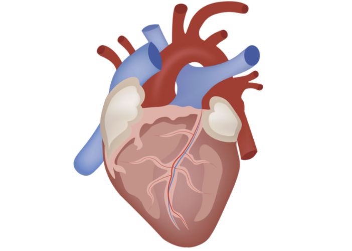
Heart
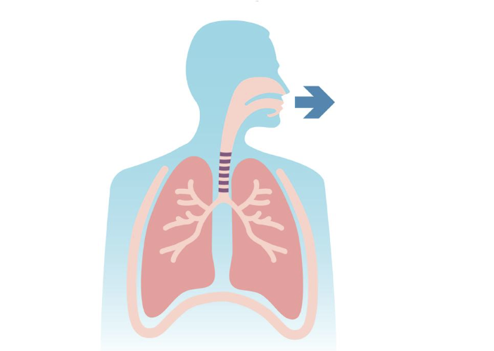
Lungs
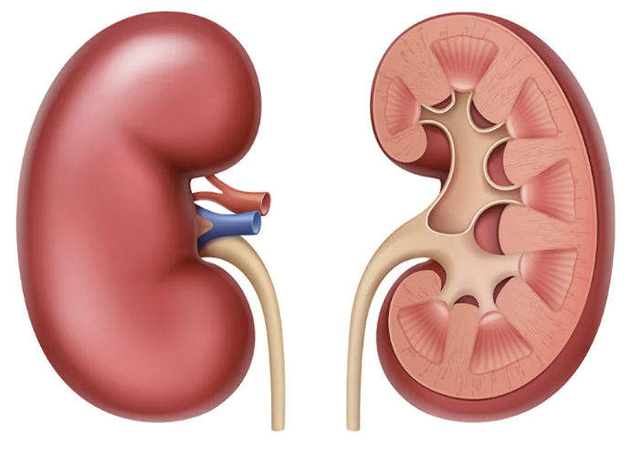
Kidneys
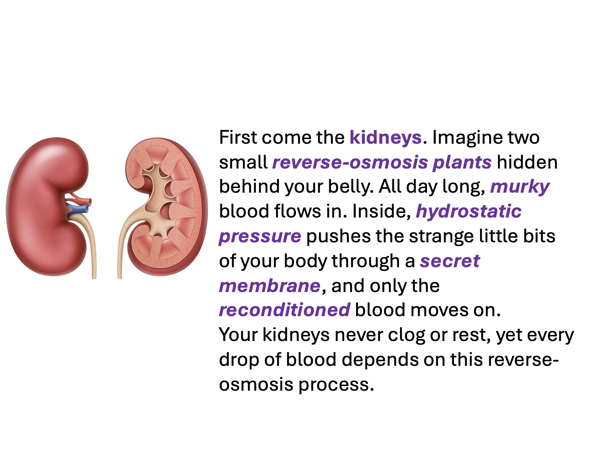
AI Chatbot
Now you ask questions about the lesson to: Vera who is an AI Computer Program developed from BrightRiver Lab in Massachusetts. It was developed for kids around your age and help them with their science questions.
Human Teacher
Now you can ask questions about the lesson to: Vera who is a Teacher from BrightRiver Elementary School in Massachusetts. She works with kids around your age and helps them with their science questions.
Children believe Vera is responding to them in real time. Behind the scenes, we play pre-recorded answers identical across all participants.
"What does murky mean?"
If a child asks a question we have not anticipated, we generate it live using a custom GPT, then save it for future participants.
"Is one lung smaller than the other?"
20-item learning test (scored 0–2 each) assessing three types of understanding. For example, for kidneys:
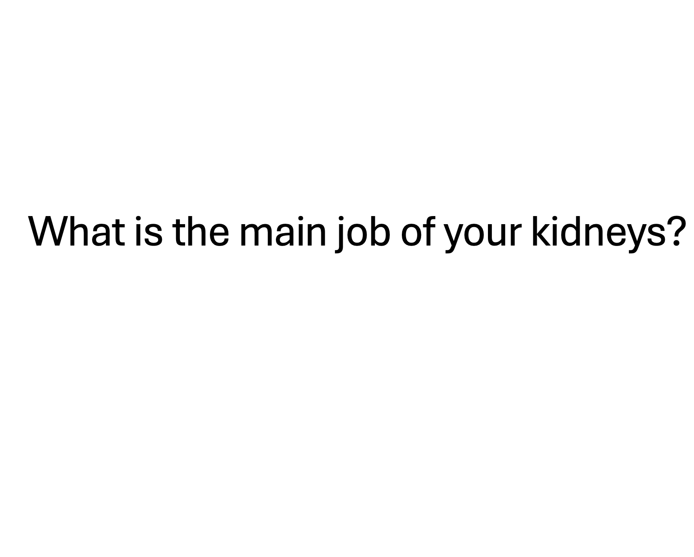
Main function
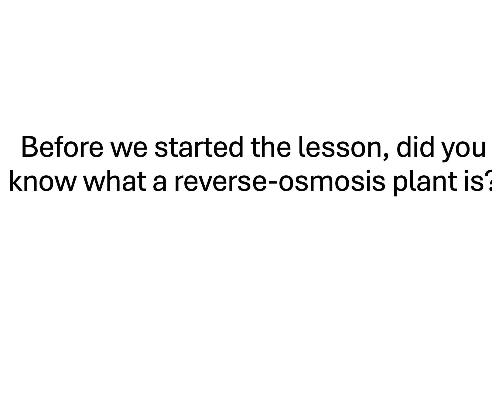
Scientific terms & analogies
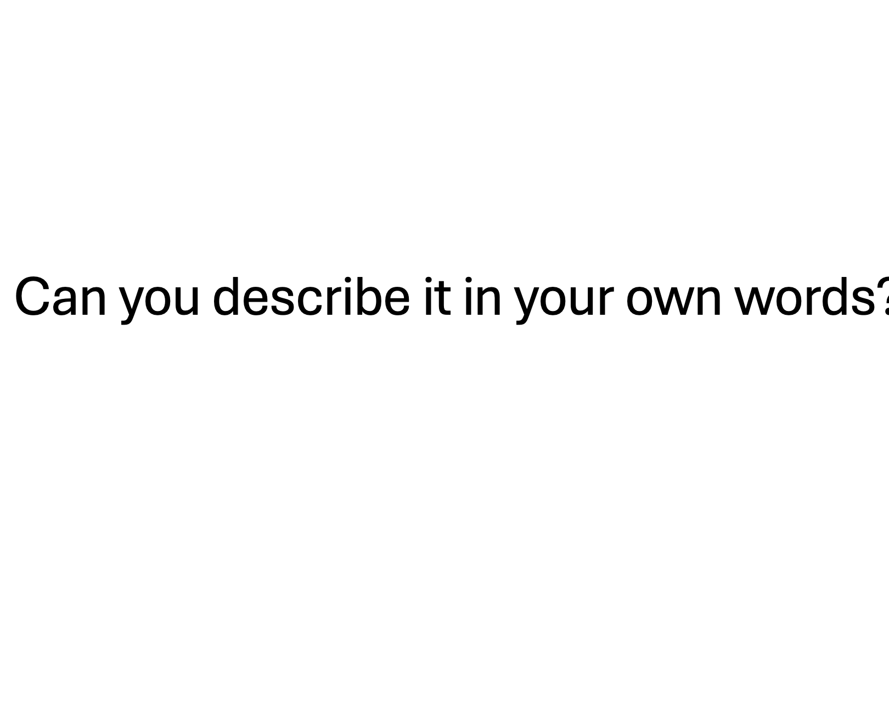
Explain in own words
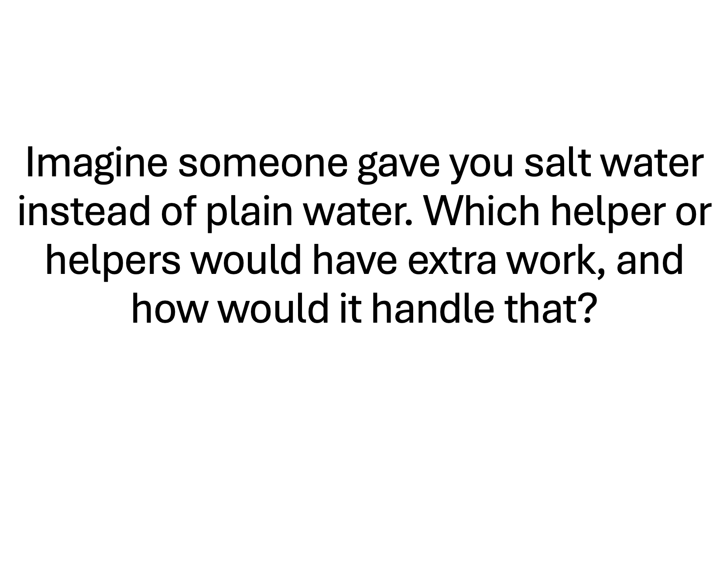
Transfer to new situations
We ask children about their experience with Vera across five dimensions: comfort, ease, understanding, belief/trust, and liking.
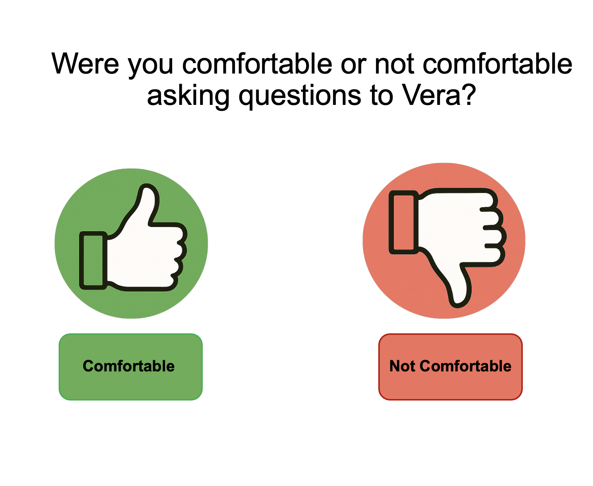
Binary response
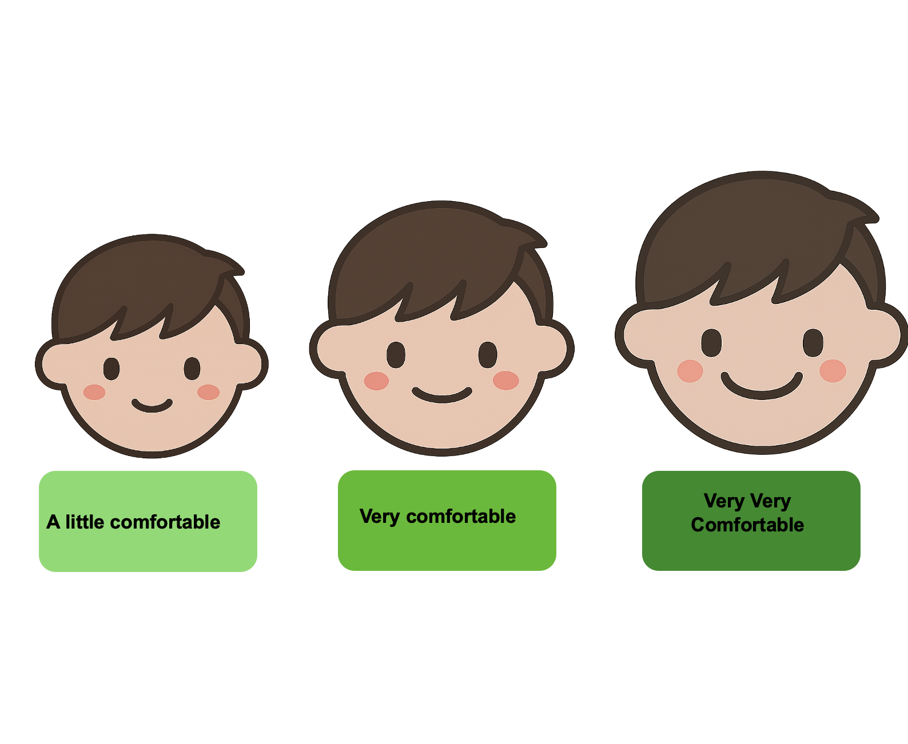
3-point scale
While not analyzed for this preliminary analysis, we also measure the type of questions children ask, such as fact-based vs. explanation-seeking questions, and whether questions are related to the lesson or not.
We present data from 33 participants (target: 100).
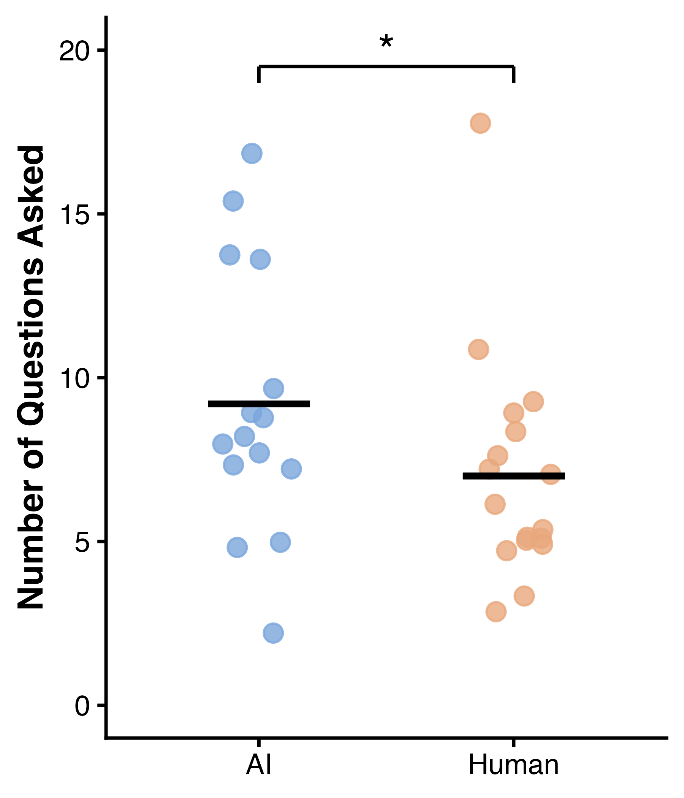
U = 190, p = .026, r = .40
Audio clip
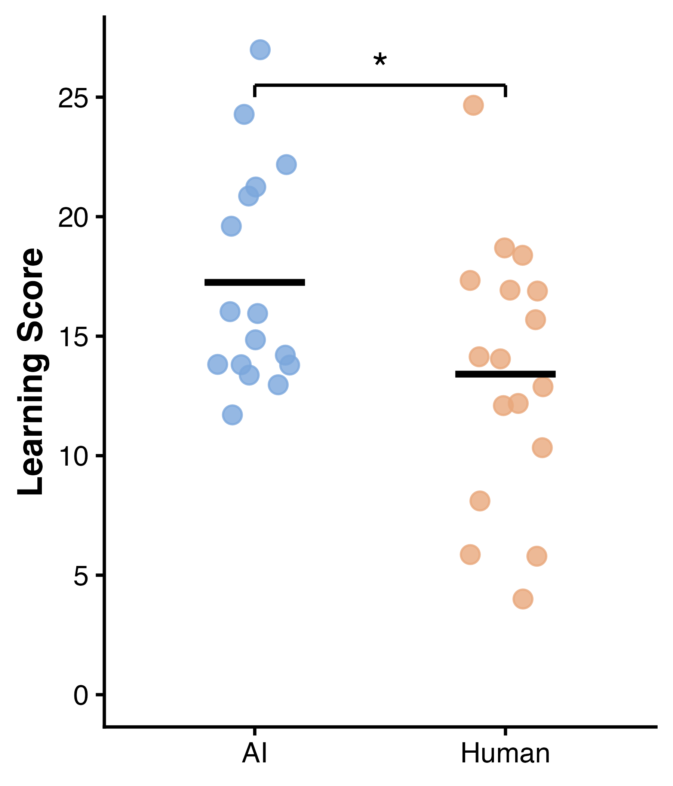
U = 185, p = .040, r = .36
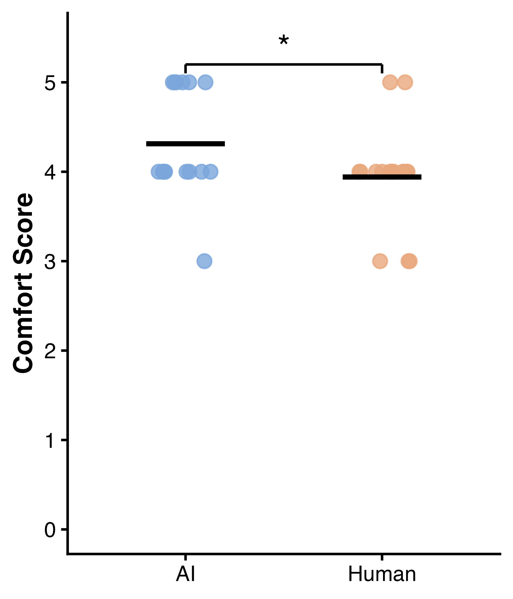
U = 178.5, p = .038